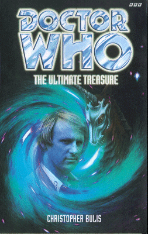

|
The Ultimate Treasure
|
BASIC PLOT DOCTOR COMPANIONS MATERIALISATION CIRCUIT Pg 57 On the bridge of Falstaff's ship. Pg 63 On the treasure planet, Gelsandor, leaving on Pg 280. PREPARATORY READING CONTINUITY REFERENCES Pg 6 "Only a few days ago, relatively speaking, she had been on twentieth-century Lanzarote, Earth, and desperate to get away from her stepfather's boring archaelogical expedition." Planet of Fire. Pg 56 makes it absolutely clear that this is Peri's first trip in the TARDIS since Planet of Fire. "After a dangerous excursion to the planet Sarn" Planet of Fire again. Pg 7 "The silver glitter reminded her of Kamelion and she frowned." Kamelion, erstwhile the Doctor's companion (The King's Demons, The Crystal Bucephalus, Imperial Moon, Planet of Fire and (in memory only) The Caves of Androzani), recently brutally killed by the Doctor (Planet of Fire). But all is not as it may have seemed. Pg 8 "For some reason he finished off his ensemble with a sprig of celery in his buttonhole. She was working her way up to asking why." Peri does ask the Doctor this in The Caves of Androzani. "All things considered she privately acknowledged that he was somebody she might find it very easy to fall for in a big way." This prefigures Peri's propositioning of the Doctor in Warmonger, although I don't think it was intended to. Just thought I'd remind you of that moment. Pg 30 "'Just how many rooms are there in this ship?' she demanded. 'Well, it varies,' admitted the Doctor. 'I had to shed a few thousand tonnes a while ago, but the TARDIS has regenerated most of the lost mass, I think.'" Logopolis and Castrovalva. Pgs 30-31 "'The key is sensitized to my body pattern.' 'Very security conscious, Doctor - now desensitize it.' The Doctor sighed, pressed the key to his forehead and closed his eyes for a moment, then handed it over to Jaharnus." The Doctor has claimed that the TARDIS is sensitive only to him numerous times, most notably in Pyramids of Mars. The key hasn't really been seen to be before, which makes me suspect that, in this case, the Doctor is lying. Pgs 34-35 "It had been fun, but she knew she was not in the right mood to fully appreciate flying like a bird." Which is unfortunate for Peri, given what is going to happen to her in Vengeance on Varos. Pg 35 "'Uh, Doctor. Can I ask, just how old are you?' 'In your years, about eight-hundred and fifty.'" This fits established continuity neatly. "You'd have understood it just as well if it had been [in his own language]. I told you the TARDIS takes care of that sort of thing." The TARDIS translation circuits are relevant in The Masque of Mandragora, and in the new series' The End of the World. Pg 53 "The Doctor explained that the humanoid form was already widespread throughout the galaxy long before then, adding vaguely that 'my people' were partly responsible." This ties in vaguely with all sorts of purported histories of Gallifrey from various books, although I can't remember any specifically off hand. Pg 55 "'Yes. A jolly little play, but Bill dashed it off too quickly, I always thought. I told him it could do with another revision.'" Another reference to meeting Shakespeare which was not the meeting in either The Empire of Glass or The Plotters. Presumably this was the same meeting referred to by the Doctor in City of Death. Pg 56 "'Can't we go back a few days and get a proper head start?' 'No. Crossing your own timeline puts the fabric of time and space under great strain. It can be dangerous.' 'Uh, how dangerous, exactly?' 'Terminally.'" It has to be said that this is a far neater and simpler explanation as to why you can't keep popping back and fixing things than any given in any other book. It also gels neatly with the new series' Father's Day. Pg 58 "He looked at Falstaff narrowly for a moment, then said a few words in a flowing tongue." The Gallifreyan language, which we've seen written down in The Five Doctors and Cold Fusion. Pg 60 "Peri, please show out guest how to use the food synthesizer." The food machine, a staple of the early black-and-white stories and mentioned numerous times since. Pg 66 "And do you also delve the time winds?" As seen in Warriors' Gate Pg 74 "Any that win through to the end will have to [sic] opportunity to receive exactly what they desire and what their conduct merits, no more, no less." This sounds like the Game of Rassilon (The Five Doctors). And we all know how well that ends for those who play it. Beware convoluted prize lists, and always check the small print. Pg 77 Peri visits the TARDIS wardrobe room as seen in The Twin Dilemma and Time and the Rani. Pg 79 "For that matter, Doctor, why are you going? You sure don't need the money." Indeed he doesn't (consider Players and Shadowmind). In fact, he keeps trying to get rid of the filthy stuff, as we've seen in The Crystal Bucephalus. Pg 89 "Either way, if he'd said yes I would choose right, and left if he'd said no. I came across something similar on Mars, once." Pyramids of Mars Pg 140 "He reached forward and undid another button of the girl's shirt, ignoring her indignant yelp of protest, to reveal a little more cleavage." Peri's cleavage was an old friend of the Doctor's which traveled with him for quite some time. It was always noted by directors and cameramen. Pg 155 "'Now get some sleep. You too, Doc.' 'Actually I don't sleep very much.'" As we've seen many times, most noticeably in The Talons of Weng-Chiang. Pg 248 "The Doctor halted them before a suspiciously neat checkerboard-tiled section of passageway with a large dark void above", which presumably reminded him of similar moments in Death to the Daleks and The Five Doctors. Pg 259 "Why is the Terrestrial Empire falling now?" The gradual decline of the Earth Empire is noted particularly in The Mutants and Frontier in Space. It is also precipitated in So Vile A Sin. "Listen: in the forest I had a nightmare. I wasn't sure what it meant then, but now I know. I was imprisoned within a bush of thorns, being sucked dry by these flying parasites, but their wastes fertilized the ground and so the vine which fed me. Day after day. It was a living death." Arnella manages to create a startlingly accurate symbolic picture of the life of the last Earth Empress in So Vile a Sin. Pg 260 "The ultimate treasure is immortality." Another vague reference to The Five Doctors without actually having anything to do with it. Pg 270 Kamelion appears, despite having died in Planet of Fire. Pg 271 "On Sarn I had caused you alarm and pain in this form." Planet of Fire. Pg 272 Kamelion dies again, albeit this time heroically. Pg 280 "'Maybe you're a hippy at heart, too, Doctor - yeah, the ultimate hippy! I should have known by the hair.'" The fifth Doctor's hair was notoriously long sometimes, although at its longest before Peri's time in The King's Demons. "But talking of flower power, I did once visit a world ruled by sentient flowers." An unrecorded adventure. OLD FRIENDS AND OLD ENEMIES NEW FRIENDS AND NEW ENEMIES Hok, the trader in dodgy merchandise. Mr Alpha, not a nice piece of work. Also his box, with a similar temperament. Rovan Hathcorl Clemont Delermain Cartovall, one-time emperor and hider of treasure, is important to the plot, despite his appearance only as a recorded image. Gloriously, as the plot becomes a multi-hand game to get the treasure, the few pages from 67 onwards read like a cast-list. The seekers, then, are: Inspector Myra Jaharnus Sir John Falstaff, otherwise known as Preston Loxley the Third. Professor Alex Thorrin, the Marquis te Rosscarrino, his niece, Arnella Marri Jossena te Rosscarrino, and their assistant Willis Brockwell. Crelly Qwaid, George Erasmus Gibbs, Drorgon Ves, the villains of the piece. Dexel Dynes of the Interstellar News Agency. He reappears in Palace of the Red Sun, along with the DAVEs.
CONTINUITY COCK-UPS PLUGGING THE HOLES [Fan-wank theorizing of how to fix continuity cock-ups] FEATURED ALIEN RACES Pgs 9-10 "Things that walked on two legs, four legs, more than she could count. Blue skins, green skins, iridescent skins, scales. Crawling things, rolling things, flying things. Things of odd shapes she couldn't begin to describe hidden in pressure suits. There were even a few things she wasn't sure were alive or not, except that they moved about." Astroville Seven sounds a little bit like the title sequence of the first series of Babylon 5. A Cantarite: Bulky, slab-sided and horned, like a Rhinoceros. The Third period Tabarons had vases (Pg 12) Hok looks like the Mock-Turtle from Alice in Wonderland, but with tentacles. The name of his race is never made clear. The two policemen: One looks like a mobile fir tree with eye-stalks, the other a creature with a sticklike body and a head as smooth as an egg. Mr Alpha looks human, except for a slightly different skin-tone and 'a certain peculiarity about the eyes'. Myra Jaharnus is a Tritonite - a humanoid reptile with scaled green skin and a crocodile tail. Mentioned in passing are the Ymerl, a race of methane-breathers who live at supercold temperatures. Various and sundry herbivorous and carnivorous land and sea creatures of Gelsandor: one resembling a prehistoric terrestrial sauropod, five metres tall and twenty-five long; smaller four-legged carrion scavengers; a massive horned lizard; sea-serpents; sentient (and angry) trees. A Kazarn Slime Rat is not something, it turns out, that even Myra Jaharnus would leave in a forest of nightmares (Pg 200) A Torkein has (at least) four arms. Also Kamelion, the old faithful robot, cunningly disguised as an armour-plated unicorn called Red. FEATURED LOCATIONS Ships include the Newton and the Falcon. Rather worryingly, Dexel Dynes' ship is called the Stop Press. The planet Gelsandor, including the Seekers' cave, various valleys, hills, woods and mountains, and the village of Braal. Trainor colony is mentioned, a tough place to grow up in (Pg 141) IN SUMMARY - Anthony Wilson |
|
 |